Introduction
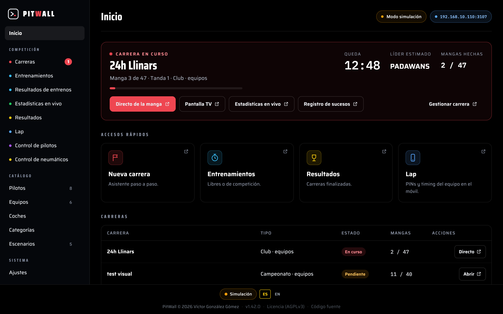
PitWall est le système de chronométrage et de gestion de courses de slot. Il détecte le passage de chaque voiture sur la ligne d'arrivée grâce au matériel de chronométrage, avec deux options compatibles :
- DS-300 — par port série. Tu peux relier jusqu'à 6 circuits DS-300 dans une seule course : chaque boîtier chronomètre ses voies et PitWall les combine. Chaque boîtier utilise son propre port (un boîtier = un port).
- DS-300 agrégateur — lorsqu'un appareil agrégateur regroupe plusieurs boîtiers DS-300 (de 2 à 4) sur un seul port COM. PitWall sépare les boîtiers par leur identifiant de trame et numérote les voies à la suite (boîtier 1 → 1–8, boîtier 2 → 9–16, et ainsi de suite jusqu'à 32 voies avec 4 boîtiers). Un seul signal de départ lance tous les boîtiers en même temps.
- BART (Policar) — par Bluetooth. Il admet jusqu'au nombre maximal de voies que permet BART (actuellement 32). Au-delà de 8 voies il faut plusieurs Master BART indépendants (p. ex.
BART_TRACK1,BART_TRACK2…), un par bloc de voies : PitWall se connecte à chacun séparément et numérote les voies à la suite, comme avec l'agrégateur DS-300.
Tu peux utiliser n'importe laquelle de ces sources ; pour PitWall le flux de passages est équivalent.
- L'écran d'accueil a en haut un en-tête avec la recherche « Aller à… » (« Ir a… », raccourci ⌘K sur Mac ou Ctrl K) : tape une partie du nom d'une section ou d'une course ; Entrée ouvre le premier résultat et Échap efface la recherche. À côté, des pastilles affichent l'état de la source de données (simulation, DS-300 connecté ou déconnecté) et l'adresse IP du serveur, pour connecter téléphones et écrans.
- Quand une course est en cours, son bandeau apparaît en dessous : manche X sur Y, série, le temps restant de la manche, les manches (celle qui se court compte déjà) et le leader estimé, le même que dans le Classement estimé du direct, mis à jour en direct. Il a des boutons vers Direct de la manche, Écran TV, Correction des tours (de la manche en cours ou de la dernière terminée), Statistiques en direct, Contrôle des pilotes (en championnat), Pneus (si la course a des trains de pneus), Journal des événements et Gérer la course. Sans course en cours, le bandeau affiche la pole en cours ou les raccourcis Nouvelle course / Entraînement libre. L'accueil se met à jour tout seul quand une course démarre et quand une manche commence, se termine ou est mise en pause.
- En dessous, les sections sont présentées en tuiles : Compétition (Courses, Course sprint, Course d'endurance, Entraînement libre, Entraînement de compétition, Statistiques en direct, Résultats, Lap, Contrôle des pilotes, Contrôle des pneus…), Catalogue (Pilotes, Équipes, Voitures, Catégories et Scénarios, avec le nombre de chacun) et Système (Réglages, Base de données, Synchroniser le catalogue, Connexion écosystème, Dépannage…). Tout en bas, le tableau des Courses récentes avec leur état, leurs manches et leur action directe (Direct, Résultats ou Ouvrir). Course sprint et Course d'endurance ouvrent l'assistant de nouvelle course avec le type déjà coché. Si un mot de passe d'accès est défini, les boutons de Catalogue et Système portent un cadenas et le demandent quand on appuie dessus ; le reste de l'accueil n'en a jamais besoin (voir Réglages).
- Chaque section s'ouvre dans sa propre fenêtre : si tu cliques à nouveau dessus, PitWall ramène au premier plan la fenêtre déjà ouverte (dans l'application de bureau, même si elle est réduite ou si tu es revenu à l'accueil depuis elle). Tu peux ainsi garder en même temps le direct, la TV et les statistiques. Les fenêtres ouvertes apparaissent dans la barre du bas de l'accueil, avec Afficher (« Traer ») pour les mettre devant et ✕ pour les fermer. L'interrupteur « Ouvrir les liens dans : Nouvelle fenêtre / Cette fenêtre » (« Abrir enlaces en »), placé dans l'en-tête à côté de Personnaliser, te permet de tout ouvrir dans la même fenêtre si tu préfères, et Maj + clic ouvre un lien ici même sans toucher à l'interrupteur.
- En bas à droite, tu vois toujours l'état de la liaison (vert = connecté ; « Sans signal » = vérifie le câble/port ou le Bluetooth).
Personnaliser l'accueil. À droite de l'en-tête se trouvent l'interrupteur « Ouvrir les liens dans » (« Abrir enlaces en ») et le bouton Personnaliser (« Personalizar »), qui ouvre une fenêtre pour choisir entre cinq mises en page de l'accueil :
- A + C · Poste de commande avec lanceur (« Mando con lanzador », par défaut) : recherche, bandeau de la course, tuiles et barre des fenêtres.
- A · Centre de commande (« Centro de mando ») : grand bandeau, cartes de compétition, catalogue en liste et système.
- B · Menu latéral + tableau de bord (« Menú lateral + panel ») : menu à gauche, cartes d'état et tableau des courses.
- C · Lanceur compact (« Lanzador compacto ») : recherche, bandeau fin et tuiles, avec la barre des fenêtres en bas.
- D · Poste de commande avec menu latéral (« Mando con menú lateral ») : menu à gauche avec le grand bandeau et des accès rapides.
Le choix est enregistré dans PitWall, pas sur l'ordinateur : tu verras la même mise en page dans l'application de bureau et dans n'importe quel navigateur connecté. Ce qui est décrit plus haut correspond à la mise en page par défaut ; les autres organisent les sections autrement (tous n'ont pas la recherche « Aller à… » ni le tableau des courses).
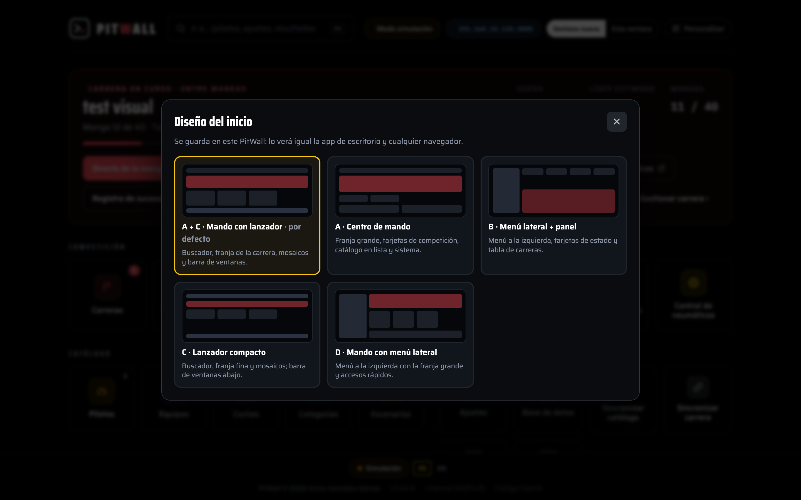
Mode basique / avancé. Dans la même fenêtre Personnaliser (ou dans Réglages → Préférences → « Mode de l'app », « Modo de la app ») tu choisis combien d'accès affiche l'accueil. Le mode Basique garde l'essentiel pour un club : dans Compétition, Entraînement libre, Course sprint et Résultats ; dans Catalogue, Catégories et Scénarios ; et dans Système, Réglages, d'où l'on revient au mode avancé. Comme le mode basique n'a pas de bouton Courses, le tableau des Courses récentes apparaît dans toutes les mises en page pour ouvrir les courses déjà créées. Le mode Avancé (celui de toujours) affiche tout. Le changement s'enregistre sur le moment, sans couper le chronométrage, et le bandeau de la course en cours est le même dans les deux modes.
La liste des courses te montre toutes tes courses avec leur état (en attente / active / terminée) et le bouton + Nouvelle course.

Scénarios, catégories et catalogues (ta bibliothèque)
Pour ne pas reconfigurer la même chose à chaque course, PitWall enregistre des modèles réutilisables que tu choisis ensuite au moment de créer une course.
Scénarios (circuits enregistrés)
Un scénario est une piste physique enregistrée : nombre de circuits et de voies (par ex. 8+8+8 = 24), sa séquence de voies (rotation) et le temps minimum par défaut. Toute course affectée à ce scénario en hérite automatiquement.

Lors de l'édition d'un scénario, tu définis son nom, la configuration des voies, tu fais glisser la séquence de rotation (avec des repos DSC s'il y a trop de pilotes), le temps minimum par défaut et, en option, des tours minimums par catégorie (un Pt différent pour GT, Tourisme, Classiques… sur cette même piste).

Couleurs des voies. Dans la fiche du scénario, le bloc Couleurs des voies (« Colores de los carriles ») a un échantillon par voie. Coche Utiliser des couleurs propres à ce circuit (« Usar colores propios en este circuito ») et clique sur chaque échantillon pour choisir sa couleur : l’écran correspond ainsi aux couleurs peintes sur la piste ; Copier les couleurs globales (« Copiar los colores globales ») part de la palette générale. Sans la coche, le scénario utilise les couleurs globales de Réglages → Préférences. Les couleurs apparaissent sur tous les écrans (direct, TV, panneaux, entraînements, pole, manches et résultats) et le numéro de voie passe en noir ou en blanc pour rester lisible sur n’importe quelle couleur.
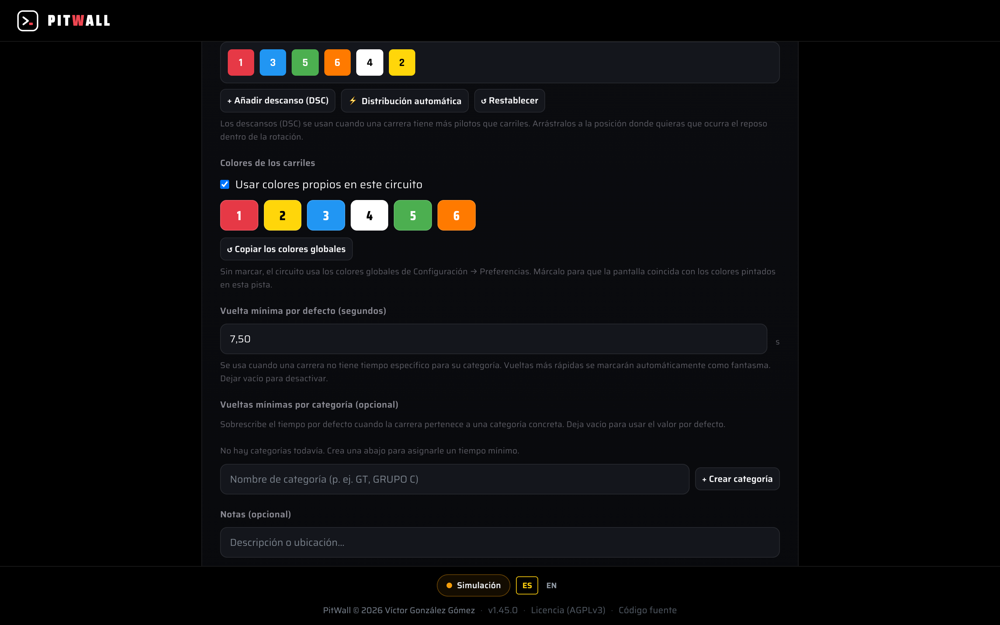
Catégories
Groupes de niveau/classe (GT, Tourisme, Classiques…) qui servent à surcharger le temps minimum (Pt) par catégorie dans chaque scénario et à classer voitures et pilotes.

Catalogues réutilisables (pilotes, équipes, voitures)
Tiens à jour ta base de données de participants et de matériel pour la réutiliser d'une course à l'autre :
- Pilotes — nom et catégorie ; chaque pilote peut avoir son QR d'identification.
- Équipes — nom, couleur, pays (avec son drapeau ; en plus des drapeaux de pays standards, il y a des drapeaux dessinés à la main pour la Catalogne et le Pays basque), catégorie (colorée comme dans le direct), voiture et membres.
- Voitures — marque, modèle et catégorie.
Tous peuvent être importés en bloc depuis un CSV (boutons Modèle CSV et Importer CSV, avec un aperçu des nouveautés vs. doublons) et exportés.
Les trois catalogues ont une barre de recherche en haut : elle filtre pendant que tu tapes (pour les pilotes, aussi par catégorie) et indique combien correspondent sur le total. La touche / t'amène à la recherche et Échap l'efface ; si tu ouvres une fiche pour la modifier et reviens, le filtre est toujours appliqué.
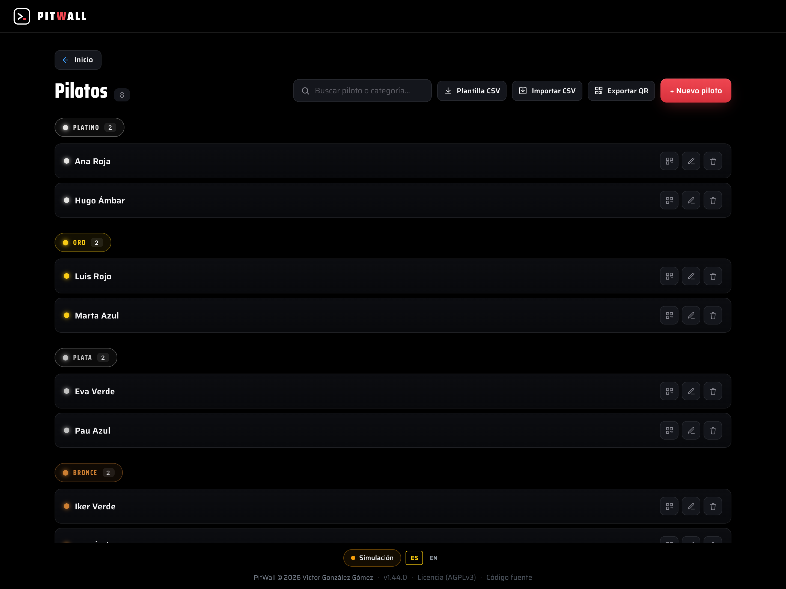

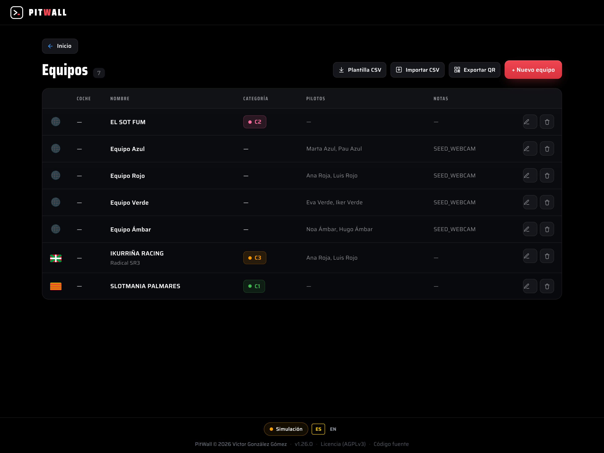
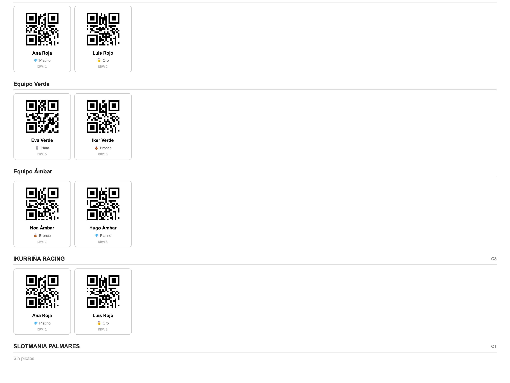
Créer une course
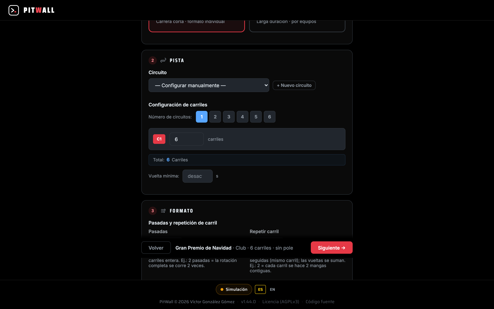
Appuie sur Course sprint ou Course d'endurance dans l'accueil, ou sur + Nouvelle course dans la liste des courses, et suis l'assistant.
- Type : si tu entres par Course sprint ou Course d'endurance, il n'est pas demandé : le titre indique déjà Nouvelle course sprint ou Nouvelle course d'endurance (« Nueva carrera sprint » / « Nueva carrera de resistencia »), et le lien Passer en endurance / Passer en sprint (« Cambiar a resistencia » / « Cambiar a sprint ») le change. Depuis + Nouvelle course, tu le choisis avec deux cartes :
- Sprint → une course rapide, de pilotes ou d'équipes.
- Endurance → une course d'endurance (par équipes), qui ajoute le contrôle du temps couru par chaque pilote de l'équipe (voir Contrôle des relais de pilote).
- Nom de la course (« Nombre de la carrera »).
- Circuit : choisis un circuit enregistré et il se résume en une ligne (p. ex. « 24 carriles · 3 circuitos (8 + 8 + 8) · vuelta mínima 6,00 s »), sans rien d'autre à remplir. Avec — Configurer à la main — (« Configurar a mano ») apparaissent le nombre de circuits, les voies de chacun (par ex. 8+8+6 = 3 boîtiers DS-300) et le temps minimum de tour (Pt) : en dessous de ce temps, un passage est considéré comme fantôme (rebond/double lecture) et ne compte pas. Si le circuit a des temps par catégorie, Catégorie apparaît aussi.
- Pole position : Sans pole ou Avec pole (« Sin pole » / « Con pole » ; le plus rapide choisit sa voie en premier).
- Règles d'endurance (« Reglas de resistencia », en endurance uniquement) : minimum et maximum par pilote (en minutes), maximum de relais, pneus (en paires par équipe) et Pas de changement à la fin (« Sin cambios al final » : les dernières secondes de chaque manche, où l'on ne peut pas changer de pilote). Ce que tu laisses vide n'est pas contrôlé.
- Plus d'options (« Más opciones », replié ; il s'ouvre tout seul si l'une des deux valeurs dépasse 1) :
- Passages : combien de fois la séquence de voies entière est parcourue. 2 passages = la rotation complète est courue 2 fois (deux fois plus de manches).
- Répéter la voie : chaque voie est courue ce nombre de manches d'affilée (même voie), en cumulant les tours — pour comparer chaque répétition.
Une barre fixe en bas résume tes choix à côté du bouton Suivant. Avant de continuer, PitWall vérifie que la course a un nom et un type et que chaque circuit a entre 2 et 8 voies, et te signale ce qui manque. Dans les étapes suivantes (Séquence, Participants, Confirmer), Retour te ramène en arrière sans perdre ce que tu avais déjà rempli.
Importer une série de PitWall Control

Si tu organises le championnat avec PitWall Control (le gestionnaire de saison), tu peux y monter l'épreuve —équipes, coupes, voies et rotation— et la transmettre à PitWall sans rien ressaisir. PitWall crée automatiquement la course à partir de ce qu'il reçoit.
Entre dans Courses → Importer une série. Il y a deux façons d'apporter l'épreuve :
- Fichier JSON — dans Control, tu appuies sur Exporter la série (JSON) et tu enregistres le fichier ; dans PitWall, tu le téléverses sur l'écran d'import.
- Par réseau (Wi-Fi/LAN) — dans Control, tu appuies sur Envoyer à PitWall : Control détecte ton PitWall sur le réseau local (ou tu saisis l'IP à la main) et demande un PIN d'appairage. Ce PIN est celui qu'affiche l'écran Importer une série de PitWall — saisis-le dans Control pour autoriser l'envoi.
Ce que crée PitWall. Chaque manche de l'épreuve de Control devient une série, avec chaque équipe placée sur sa voie de départ. Les repos (D1, D2…) sont placés et tournent comme dans n'importe quelle rotation (voir Séries, participants et rotation).
Avec pole. Si l'épreuve a une pole (interrupteur La course a une pole dans Control ; à l'export vers fichier, il te le demande), Control n'envoie pas l'ordre des voies. Sur l'écran d'import de PitWall, coche Cette course a une pole : PitWall crée la course avec la séance de pole (toutes les équipes) et la grille se décide après avoir couru la pole (voir Pole).
Séries, participants et rotation

Une série regroupe les participants et leur rotation de voies par manche. Lorsque tu ajoutes les équipes/pilotes, PitWall génère automatiquement toutes les manches.
Comment fonctionne la rotation
Chaque participant change de voie de manche en manche en suivant la séquence configurée (par ex. 1, 3, 5, 6, 4, 2). Ainsi, tout le monde passe par toutes les voies et les conditions s'égalisent.
- Exemple (6 voies, 6 pilotes) : dans la manche 1, le pilote A court sur la voie 1 ; dans la manche 2, la 3 ; dans la 3, la 5… jusqu'à avoir fait le tour de toutes les voies.
Rotation à ta guise
PitWall propose automatiquement une rotation équilibrée, mais tu peux la gérer comme tu veux : réordonne la séquence de voies à la main (en faisant glisser) pour décider exactement par quelle voie passe chaque participant à chaque manche.
Repos
S'il y a plus de participants que de voies, la séquence inclut des trous (0 / DSC) qui sont des repos : dans cette manche, ce participant ne court pas. PitWall les répartit de façon équilibrée, mais tu peux aussi les placer où tu veux dans la rotation (fais-les glisser à la position que tu préfères).
Voies vides (moins de participants que de voies)
Pas besoin de remplir toutes les voies : tu peux créer une manche avec moins de participants que de voies (une suffit). Les voies en trop restent libres, sans voiture fantôme qui apparaîtrait dans les tours ou le classement. À la création de la manche, tu choisis quoi en faire :
- Les dernières restent vides (par défaut) : les voies au numéro le plus élevé restent vides toute la course ; personne n'y roule.
- Le trou tourne : la voie (ou les voies) libre tourne d'une manche à l'autre, de sorte que tous les participants finissent par passer par les mêmes voies et la piste reste aussi équitable qu'avec une grille complète.
Avec passages / répétition de voie
- 2 passages → la séquence entière se répète : 1,3,5,6,4,2, 1,3,5,6,4,2.
- Répéter la voie 2 → chaque voie, deux manches d'affilée : 1,1,3,3,5,5,6,6,4,4,2,2.
Éditer la course, les séries et les manches
Après avoir créé une course, tu peux la retoucher :
- Éditer la course — changer le nom et, tant qu'il n'y a pas de tours enregistrés, le scénario. Tu peux attribuer un scénario à une course qui n'en avait pas, le changer pour un autre ou le retirer. En attribuant un scénario, la course hérite de ses voies, de sa séquence de rotation et de son temps minimum (et des tours minimum par catégorie, s'il y en a), et PitWall régénère les séries en attente avec cette configuration ; en le retirant, la course passe en mode manuel en conservant sa configuration. S'il y a déjà des tours, le scénario reste verrouillé (pour ne pas casser les données).

- Règles d'endurance (relais et pneus) — dans une course d'endurance, et tant qu'aucune manche n'a été courue, Éditer la course te permet aussi d'ajuster les règles de relais par pilote (minimum et maximum par pilote, nombre maximum de relais et le blocage de fin de manche) et les pneus par équipe (la dotation avec laquelle démarre le contrôle des pneus) — les mêmes champs que tu as fixés dans l'assistant à la création de la course. Tu peux ainsi corriger un chiffre sans refaire toute la course. Dès que la première manche est courue, ces champs se verrouillent (atténués, avec un cadenas 🔒) pour ne pas déséquilibrer ce qui a déjà été couru ; le nom et le scénario gardent leurs règles habituelles. Si tu mets un maximum par pilote inférieur au minimum, PitWall te prévient.
- Éditer la série — changer les noms des participants et, si la série n'a pas encore commencé, sa composition. Si elle a déjà des manches lancées, elle passe en mode renommer seulement (on n'ajoute ni ne retire de participants, pour ne pas déséquilibrer la rotation).

- Éditer la manche — changer qui court sur chaque voie dans une manche précise, sans régénérer toute la série (utile si une équipe ne se présente pas ou en cas de changement de dernière minute).
Pole (qualification préalable)

La pole est un tour qualificatif avant la course pour décider l'ordre de départ. Elle est facultative ; elle s'active à la création de la course (Pole) et se lance depuis la page de la course → Configurer la Pole Position.
- Participants : tous les inscrits apparaissent dans une grille numérotée (1, 2, 3…) qui s'ajuste seule à la largeur de l'écran et se remplit par colonnes —en correspondance avec les groupes de circuit C1/C2/C3—. Cet ordre est celui dans lequel ils sortiront faire leur tour ; tu peux glisser n'importe quel participant à la main pour le changer, ou appuyer sur 🎲 Aléatoire pour tout mélanger.
- Voie de pole : tous font leur tour qualificatif sur la même voie (pour que ce soit comparable). Choisis-la avec −/+ ou avec 🎲 Aléatoire.
- Changement automatique de pilote : interrupteur à côté d'Ignorer le 1er passage. Case activée, à la fin de la tentative d'un pilote le bouton Pilote suivant fait un compte à rebours de 3 secondes et passe seul au suivant, sans attendre le clic manuel. C'est une préférence du poste de contrôle (elle est enregistrée dans le navigateur lui-même), pas de la course.
- Appuie sur Commencer la Pole : chaque participant entre à tour de rôle, fait son tour et PitWall enregistre son meilleur temps. Dans le chronométrage, tu peux activer Ignorer le 1er passage (out-lap) pour ne pas compter le tour de lancement.
- Absent : si le participant dont c'est le tour ne se présente pas en piste, le bouton Absent le passe. La première fois, il l'envoie à la fin de la file —il aura une autre chance quand son tour reviendra—; s'il est de nouveau sauté sans avoir couru entre-temps, il est marqué absent pour de bon. Les absents ne concourent pas pour la pole avec un 0,00 synthétique comme si c'était le tour le plus rapide : ils apparaissent à part, dans leur propre bloc, aussi bien dans le classement en direct que dans les résultats finaux.
Résultats de la pole
À la fin apparaît Résultats Pole avec le classement final (du plus rapide au plus lent, avec l'écart au leader et le meilleur tour). D'ici, tu peux ✏️ Éditer les temps s'il y a eu une erreur, ou continuer avec 🚦 Attribuer les voies de départ.

Attribuer les voies après la pole
La pole ne répartit pas les voies automatiquement : elle ouvre l'écran Choix de voie, où chaque participant choisit sa voie dans l'ordre du classement — le poleman (le plus rapide) choisit en premier, puis le 2e, et ainsi de suite. C'est le classique « le plus rapide choisit sa voie ».

- La bannière Choix en cours indique à qui c'est le tour ; à gauche tu vois l'ordre de choix (le classement) et à droite les voies disponibles (avec leur couleur).
- Chacun appuie sur la voie qu'il veut ; cette voie disparaît des disponibles et le tour passe au suivant.
- S'il y a plus de participants que de voies, des trous de 💤 Repos apparaissent : celui qui choisit le repos ne court pas la manche 1 et entre dans la rotation à partir de la manche 2.
- Quand tout le monde a choisi, appuie sur 🏁 Créer la Première Série : PitWall crée la série et génère toutes les manches avec cette grille comme point de départ (l'ordre de choix définit la position initiale dans la rotation des voies). À partir de là, la course fait tourner les voies de manche en manche comme d'habitude (voir Séries et rotation).
PitWall Lap — pour les équipes

Les équipes peuvent suivre leur course depuis le mobile de deux façons, non exclusives : la vue web avec PIN (rien à installer, en lecture seule) ou l'appli native PitWall Lap (installée sur le mobile, avec la voix et la stratégie pneus en direct).
Vue web avec PIN.
- Entre dans PitWall Lap · PINs de la course. Tu verras l'adresse que les équipes ouvrent sur le mobile (par ex. http://<IP-du-serveur>:3000/lap/<id>) et le tableau ÉQUIPE → PIN.
- Donne à chaque équipe son PIN. En ouvrant l'adresse et en le saisissant, ils entrent directement sur leur panneau.
- Nouveau régénère le PIN d'une équipe (au cas où il aurait fuité ou qu'ils veuillent le changer).
- PIN d'accès — Activé / Désactivé (« PIN de acceso — Activado / Desactivado »). Sur la même feuille de PIN, un interrupteur permet de retirer le PIN de cette course. Avec le PIN désactivé, chaque équipe entre sur son panneau de chrono rien qu'en se choisissant dans la liste, sans rien taper (pratique pour les événements internes où le PIN gêne). Les PIN sont conservés au cas où tu le réactives. C'est un réglage par course, et il voyage aussi vers le chronomètre esclave BART lors de la synchronisation de la course (Race Link).
- Suivi des rivaux. Dans son panneau, chaque équipe peut suivre jusqu'à 5 rivaux et comparer voie par voie les tours, le meilleur tour et les moyennes (manches terminées uniquement). La liste est enregistrée par équipe : tous les mobiles du stand la partagent. Détails dans le Manuel des statistiques, section PitWall Lap.
Appli native PitWall Lap (iOS/Android). C'est la voie complète : le pilote installe l'appli sur son mobile et, à l'ouverture, choisit la source (PitWall ou le chronomètre TicTac Slot en solo, sans serveur derrière) et l'appli découvre le serveur toute seule sur le réseau local en quelques secondes — sans URL ni PIN à distribuer. Si la découverte automatique échoue, on saisit l'IP à la main une fois et l'appli s'en souvient la fois suivante. Si le serveur a plusieurs courses ou séries actives, elle laisse choisir ; ensuite le pilote choisit son nom/équipe dans la liste pour entrer sur son panneau.
Elle partage avec la vue web le chronométrage en direct et la voix (tours, changements de position, mi-manche, alertes de temps et, en mode avancé, toutes les N minutes : moyenne de la manche, moyenne de course — sur toutes tes manches —, écarts et « moyenne pour remonter »), et offre en plus :
- Un écran de course fait pour un coup d'œil : ton dernier tour en grand, en violet si c'est ton meilleur tour, en vert si tu es à moins de 2 % de celui-ci et en orange si tu es plus lent, avec l'écart en dessous (+0.23 vs mejor) ; ta position et les écarts avec le nom du rival devant et derrière. Si la direction de course met en pause, arrête (STOP) ou termine la manche, l'appli l'affiche et la voix l'annonce ; à la fin, elle t'indique ta prochaine manche et ta voie. Les réglages de la voix restent repliés pendant que tu roules, avec l'interrupteur général toujours à portée de main.
- Stratégie pneus en direct (courses d'endurance, avec un pilote sélectionné) : recommande quand changer — par dégradation réelle du rythme, ou de façon planifiée selon les tours/trains restants quand le pneu ne perd pas de rythme —, avec un conseil selon la position et une modélisation de l'usure des rivaux devant et derrière. Si la course utilise le contrôle des pneus du serveur (voir Contrôle des pneus d'endurance) et que l'équipe correspond par son nom, la dotation et les changements sont pilotés par PitWall Manager : l'appli les affiche en direct (trains disponibles, dernier changement) sans bouton manuel. Sans contrôle du serveur, le pilote tient le compte à la main (trains, changements obligatoires, coût d'arrêt) et confirme lui-même avec Cambié gomas (« j'ai changé les pneus »).
- Pole : son propre écran pour suivre ton tour de qualification, l'écart à la pole et le classement final, si la course en a une.
- Historique et Entraînement : les courses passées (même celles que tu n'as pas suivies en direct) et un mode d'entraînement libre qui enregistre tes relais de roulage (tours, meilleur, moyenne) directement sur le mobile, avec un graphique et une comparaison entre eux.
Diriger la course en direct
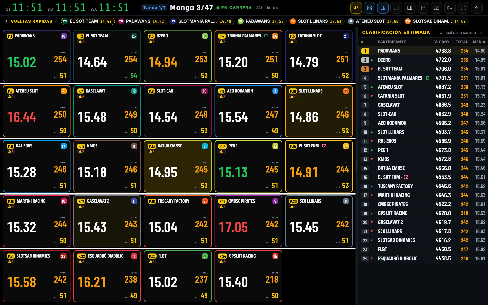
Depuis la page de la course :
- Armer la manche (▶). Elle reste prête, en attente du GO du boîtier.
- GO : au moment du départ donné sur le boîtier, le feu tricolore apparaît et le chronomètre démarre. Chaque circuit a sa propre horloge (C1/C2/C3).
- Pendant la manche, tu vois par voie : total de tours, dernier, moyenne, meilleur, et en haut la bannière du meilleur tour.
- Pause / Reprendre / Arrêter la manche au besoin.
- À la fin (drapeau ou fin de temps), la manche se ferme et la suivante se prépare.
- Quand toutes les manches d'une série sont terminées, la série suivante démarre.
La fiche de la course reste accessible pendant qu'une manche tourne. Ouvrir une course qui a une manche en cours ne t'emmène plus directement au direct : tu vois sa fiche (état, classement projeté, séries…) avec un lien « Manga N » (Manche N) pour sauter au direct quand tu veux. Quand tu donnes le GO depuis la fiche, l'écran saute bien tout seul au direct, et on ne peut toujours pas lancer une deuxième manche pendant qu'une autre tourne.
Changer l'état d'une course. Sur la fiche de la course, à côté de l'étiquette d'état, le bouton Changer l'état (« Cambiar estado ») propose En attente (« Pendiente », pas encore commencée), En cours (« En curso », affichée sur l'accueil et reçoit le GO) et Terminée (« Completada », passe aux résultats). Utile, par exemple, pour rouvrir une course fermée par erreur ou mettre de côté une course que tu ne vas pas encore courir. Impossible de le changer pendant qu'une manche de cette course tourne. Si tu mets une course En cours alors qu'une autre l'est déjà, PitWall te prévient : le prochain GO du DS va à la première manche en attente de n'importe quelle course en cours, il vaut donc mieux n'en garder qu'une.
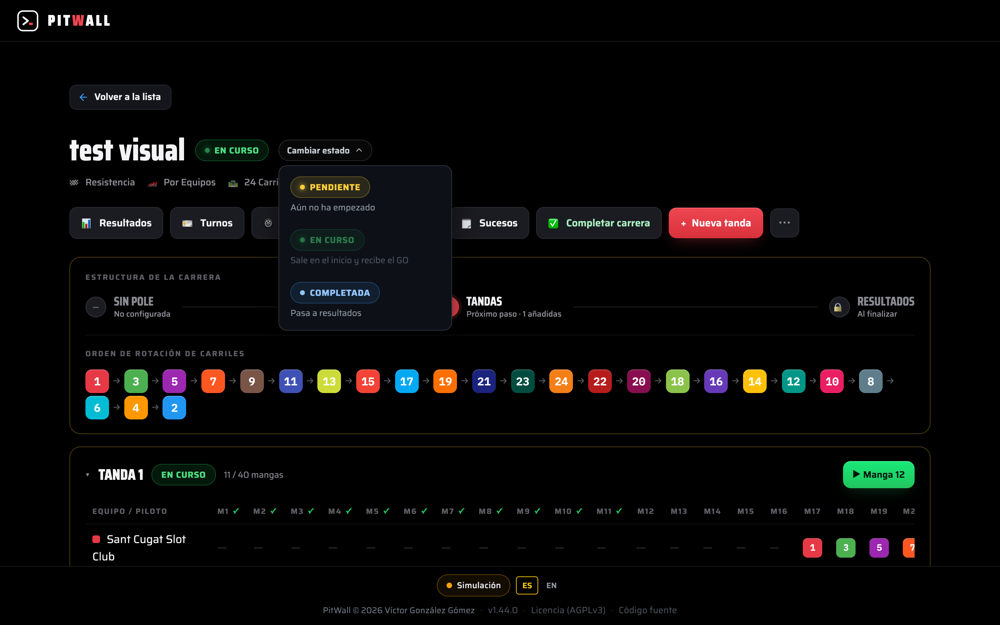
Choisir la vue. Avec le bouton Vue (« Vista »), tu choisis entre deux vues : Lignes horizontales (une ligne par voie) ou Cartes détaillées (une carte par voie, lisible de loin). L'ancienne Grille compacte n'existe plus : si tu l'avais choisie, ce sont les cartes qui s'ouvrent.
Les cartes. Le dernier tour s'affiche en grand avec le total de tours à côté et, en dessous, meilleur tour, moyenne, Gap V et tours de la manche ; les chiffres s'adaptent tout seuls à la taille de la carte, qu'il y ait 6, 24 ou 40 équipes. Le dernier tour passe en violet avec « RÉCORD CARRERA » (record de la course) si c'est le meilleur tour de la course et en bleu avec « BOXES » (stand) s'il comprenait un arrêt. Chaque carte montre le pilote au volant avec une barre du temps qu'il a déjà conduit face au maximum par pilote (ambre à partir de 85 %, rouge s'il le dépasse) ; si une voie n'a pas pointé, tu verras « SIN PILOTO » (sans pilote) pendant la manche. Elle signale aussi les sorties, les arrêts au stand (« PIT 2 ») et les trains de pneus utilisés sur le total (« 4/12 »).
Lignes sur deux colonnes. Quand les équipes ne tiennent pas sur une colonne, la vue en lignes se répartit sur deux colonnes, chacune avec son en-tête, pour les voir toutes à la fois (jusqu'à 40 sur un écran 1080p). Dans les courses avec contrôle des pilotes, chaque ligne affiche le pilote sous l'équipe.
Ordre du direct. Dans Réglages → Préférences → Ordre du direct (« Orden del directo »), tu choisis comment sont triées cartes et lignes : par classement estimé (recommandé) ou par tours réels (à égalité, le temps total le plus bas). Avec les tours réels, le Gap V n'est pas affiché. Le classement estimé du panneau latéral ne change pas.
Classement estimé à côté. Dans les deux vues, le bouton avec l'icône de panneau latéral (à côté de Vue) ouvre ou ferme le classement estimé ancré à droite des lignes, comme dans TicTac : #, participant, T. proj. (« V. Proy. », tours estimés), Total (tours réels) et Moyenne. PitWall se souvient si tu l'as laissé ouvert pour chaque course. Par défaut, le panneau prend une largeur automatique (juste ce qu'il faut pour lire les noms en entier, 40 % de l'écran au maximum) et ajuste la police pour que tout le monde tienne ; sinon, il change de page toutes les 20 s. En faisant glisser son bord, tu choisis toi-même la largeur (s'il reste de la place, Gap V et la tendance apparaissent aussi) et un double-clic sur le bord revient à l'automatique. Les lignes adaptent leur police à l'espace restant : le nom du pilote est prioritaire et, dans les fenêtres très étroites, on masque d'abord Gap V, puis VLT, puis DERNIER. Dans la vue en cartes, panneau ouvert, les cartes retirent meilleur tour, moyenne et Gap V (ils sont déjà dans le classement) et gardent les tours de la manche sous le total.
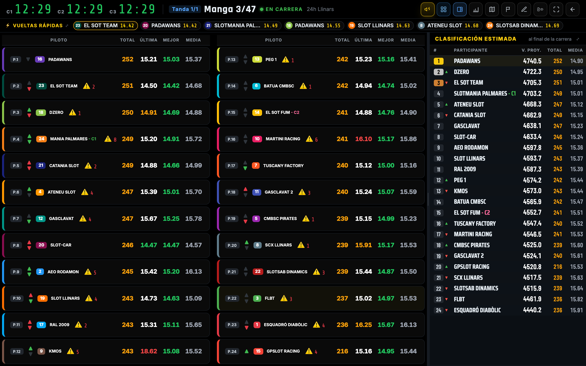
Écrans fixes de salle ou TV. En ajoutant des paramètres à l'adresse du direct, cet écran démarre toujours de la même façon sans modifier ce qui est enregistré : ?side=standings (panneau ouvert) ou ?side=none (fermé), et ?view=1 ou ?view=3 (Lignes horizontales ou Cartes détaillées ; un ancien lien avec ?view=2 ouvre aussi les cartes). On peut les combiner : ?view=1&side=standings.
Distance au leader et estimation provisoire. Sur les écrans de classement (Le Mans et statistiques en direct), la distance au leader est donnée avec la virgule et son équivalent en secondes —« a 2,8 v (35,5") », soit à 2,8 tours, c'est-à-dire 35,5 secondes—, et non arrondie à des tours entiers. Et si une estimation porte un astérisque orange, c'est que cette équipe en est encore à sa première manche sans avoir dépassé les 60 % : sa référence n'est pas figée et le chiffre peut encore bouger. Tout cela est expliqué en détail dans le Manuel de statistiques.
Changer de série, répéter une manche et terminer
Depuis le direct lui-même, tu as des raccourcis sans quitter l'écran :
- Série suivante — quand les manches d'une série se terminent, passe directement à la suivante.
- Répéter la manche — si une manche a été jugée mauvaise (faux départ, incident), tu la relances avec les mêmes participants et voies.
- Terminer la course — clôt la course (le « drapeau ») : le classement se fige et le résumé est généré pour les résultats et pour les mobiles (PitWall Lap).
Événements de course
La page 🗒️ Événements —accessible depuis la fiche de la course et via un bouton dans l'en-tête du direct— affiche, manche par manche, tout ce qui se passe pendant la session dans un format facile à lire : GO (y compris quand il est donné dans plusieurs boîtiers séparément, circuit par circuit), pause et reprise par circuit, fin de manche, annulation, récupération après une coupure, tours fantômes/ignorés et leur réattribution à la bonne voie, départs rétroactifs et les enregistrements de pilote (QR, changement à chaud ou correction manuelle).
Les manches s'affichent repliées par défaut —seule celle en cours apparaît dépliée— et se déploient d'un clic sur leur en-tête. Une case à cocher permet de masquer les enregistrements de pilote routiniers précédant le GO quand seuls les autres événements intéressent.
Contrôle des relais de pilote (championnats)
Dans les courses de championnat par équipes, tu peux imposer des règles de partage du volant entre les pilotes d'une équipe. Elles se définissent à la création de la course :
- Temps minimum / maximum par pilote — chaque pilote doit rouler au moins X et au plus Y.
- Blocage après un changement — un minimum de temps avant de pouvoir rechanger de pilote.
- Maximum de relais par pilote.
Les changements de pilote s'enregistrent en scannant le QR du pilote (ou en saisissant son code) à l'entrée en piste. Depuis le direct, tu ouvres Contrôle des relais, qui affiche le pilote actuel par voie, le temps cumulé de chacun (en signalant s'il enfreint une règle) et l'historique des relais ; si un changement a été mal enregistré, tu peux corriger le temps du relais.
Contrôle des pneus d'endurance
Dans une course d'endurance, vous pouvez suivre les trains de pneus que chaque équipe utilise. La dotation —les trains avec lesquels tout le monde démarre— se fixe à la création de la course (assistant, étape 1, champ « Pneus par équipe »). Avec 0, le contrôle est désactivé et tout fonctionne comme avant.
Il s'ouvre de deux façons :
- Depuis la course, avec le bouton 🛞 Pneus (n'apparaît qu'en endurance et avec une dotation supérieure à 0).
- En kiosque sur /control/tires (depuis le menu d'accueil : Compétition → Contrôle des pneus), qui détecte tout seul la course d'endurance en cours —comme le kiosque des relais—. Idéal à laisser ouvert sur une tablette près du stand.
L'écran est une grille avec toutes les équipes. Chaque case affiche le nom de l'équipe et deux nombres : Disponibles et Utilisés.
- Un clic sur la case = livrer un train : les disponibles baissent d'un, les utilisés montent d'un, et cela est enregistré dans quelle manche et à quelle minute:seconde de course le changement a eu lieu (horodaté avec la manche en cours et son chrono ; s'il n'y en a aucune en cours à ce moment-là, c'est enregistré sans temps).
- Le crayon de chaque case ouvre l'historique de cette équipe, où vous pouvez supprimer une entrée (le train revient aux Disponibles), modifier sa manche et son temps (mm:ss) ou en ajouter un à la main (manche, temps et une note).
Les compteurs ne sont pas stockés bruts : ils sont dérivés des entrées (dotation moins livraisons), donc annuler ne laisse jamais de décalage. Si une équipe dépasse son quota, ses Disponibles peuvent passer en négatif et en rouge —prévu pour quand vous donnez un train supplémentaire hors dotation.
Dans l'en-tête, à côté de la dotation, le bouton 🗒️ Historique des changements ouvre —dans un nouvel onglet— une page avec le journal global de toute la course (et non celui d'une seule équipe). Il est présenté comme un tableau en colonnes (jusqu'à trois colonnes) qui exploite la largeur de l'écran pour tout voir presque sans défilement. Les changements sont groupés par manche : toutes les manches sont listées, et celles sans aucun changement sont tout de même marquées « — aucun changement de pneus — ». Dans chaque manche, chaque livraison indique l'équipe (avec son point de couleur et son nom), quel numéro de train c'était pour cette équipe (train N de la dotation, compté par ordre chronologique —1, 2, 3…—, en rouge s'il a dépassé le quota) et la minute:seconde de course. Les changements sans manche assignée vont dans un groupe « Sans manche » à la fin. C'est en lecture seule —pour supprimer, modifier ou ajouter à la main, on utilise toujours le crayon de chaque équipe— et il se rafraîchit en direct pendant qu'on livre des pneus.
Dans la vue en direct, chaque carte d'équipe affiche un indicateur 🛞 avec le nombre de trains de pneus utilisés, à côté des avertissements de sorties (⚠️) et de pit-stops (🔧). Il se met à jour instantanément —sans recharger— dès que tu enregistres un changement dans le contrôle des pneus, et il clignote quand le nombre augmente. Il n'apparaît que dans les courses d'endurance avec contrôle des pneus, et il fonctionne que la manche soit en cours ou en attente.
Vérifications techniques de PitWall Control
Si le club fait passer la vérification technique des voitures avec PitWall Control, ce résultat peut aussi arriver jusqu'à PitWall —par le même pont réseau que les séries, avec le même PIN et le même interrupteur Connexion écosystème (voir Importer une série de PitWall Control).
Manche par manche, Control envoie l'instantané de ce qui a été vérifié par équipe : poids (initial, final et minimum de la voiture), moteur (type, tours/min, ums), pignon/couronne (marque, dents, diamètre, matériau), jantes avant et arrière, tresse, suspension, châssis-base, châssis, pneu, si c'est validé ou non, et observations —avec photos, s'il y en a.
Comment ça s'affiche dans PitWall. Dès que le premier envoi arrive, la page de la course affiche le bouton 🔍 Vérifications, qui ouvre un écran avec toutes les vérifications regroupées par manche.
Tour par tour et corrections (ajouter / retirer des tours)

Depuis la course (bouton de correction des tours dans le direct ou dans les résultats), tu accèdes au tour par tour de chaque manche. Il sert à corriger les lectures mal enregistrées.
- Gauche : les voies de la manche ; choisis l'équipe/le pilote à revoir.
- Droite : sa liste de tours — TR (n°), TEMPS, HORLOGE (moment de course) et Δ PRÉC. (différence avec le tour précédent).
- Actions par tour :
- Transférer (↔) — passer le tour à une autre voie/équipe (si le système l'a mal attribué).
- Fantôme — marquer le tour comme non valide (il ne compte pas) sans le supprimer ; on peut le restaurer.
- Supprimer (🗑) — éliminer un tour.
- Ajouter un tour manuel — s'il a manqué un passage, tu l'ajoutes à la main.
Corrections pendant la manche. Chaque correction se voit tout de suite dans le direct et dans le classement, sans attendre le passage suivant, et la numérotation des tours reste juste (par exemple, après avoir ajouté un tour à la main, le passage suivant reçoit le bon numéro). Si la manche est déjà terminée, le direct que tu as ouvert se recharge tout seul avec les données corrigées.
Résultats et exports

À la fin (ou à tout moment), entre dans Résultats :
- Comparatif (grille) : par participant, chaque voie avec Rapide / Moyenne / Consistance / Sorties / Pit-stops. Dans les courses à passages/répétition de voie, chaque voie se décompose en ses occurrences (1/2, 2/2) pour comparer.
- Progression / Positions / Écart au leader / Écart (grille) / Statistiques avancées : différentes vues d'analyse (expliquées en détail dans le Manuel de statistiques).
- Exports : Excel, Points (xlsx/csv), Control (csv), Exporter pour GitHub, PDF.
- L'export Excel (résultats, points et rapport de relais) ne fonctionne que course arrêtée ou terminée : impossible de sortir l'Excel pendant qu'une manche tourne (ce calcul lourd bloquerait le chronométrage, au risque de perdre un passage). Si une manche démarre pendant la génération, l'export est annulé et il suffit de le relancer ensuite.
Résultats publics
Il existe une page ouverte —Résultats, dans le menu d'accueil— où n'importe qui peut consulter (sans rien toucher ni pouvoir éditer) les résultats des courses terminées. C'est celle que tu partages avec les pilotes et le public pour qu'ils regardent le classement et les statistiques de la course. La page a un moteur de recherche (par course, circuit, ou équipe ou pilote du podium) et des onglets Toutes / Sprint / Endurance. La dernière course est mise en avant en haut, sur toute la largeur, et chaque carte indique le type, la date de fin, le circuit, le nombre de pilotes ou d'équipes et de manches, le podium avec ses tours et le meilleur tour de la course.

Entraînement

En plus des courses, PitWall dispose d'un mode Entraînement (boutons Entraînement libre et Entraînement de compétition de l'accueil) pour rouler sans monter une compétition complète. Il y a deux modalités :
- Entraînement libre : enregistre des tours par voie sans structure d'équipes. Idéal pour des séances ouvertes où chacun teste voiture et piste ; il n'y a ni rotation ni classement, seulement des temps par voie.
- De compétition : équipes ou pilotes affectés à des voies avec rotation automatique après chaque série, comme une course mais pensé pour s'entraîner au format championnat.
Choisis la modalité, attribue les voies et appuie sur Commencer. Le chronométrage en direct fonctionne comme en course (GO du boîtier, tours, meilleur/moyenne par voie).
Le direct de l'entraînement. En haut, tu as les mêmes boutons que dans le direct de course (GO, pause, STOP, voix, Vue, réinitialiser, plein écran et Retour). La carte de chaque voie affiche :
- le dernier tour et son écart avec le meilleur ;
- la ligne Meilleur / Moyenne / Record ;
- les 10 derniers tours (le plus récent en haut) ou, si tu le choisis dans Réglages → Préférences → « Historique des tours en entraînement » (« Historial de vueltas en entrenos »), les 10 meilleurs, du meilleur au moins bon ; en grand et chacun précédé de son numéro de tour (avec un entraînement déjà ouvert, le changement se voit en rechargeant) ;
- un graphique de rythme avec les lignes du meilleur tour et de la moyenne : en survolant (ou en touchant) un point, tu vois le numéro du tour, son temps et son écart avec le meilleur.
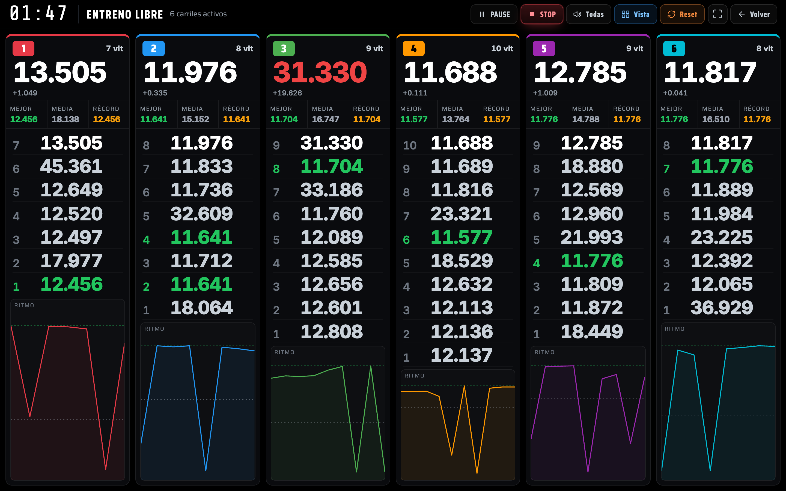
À la fin de la séance, les temps restent à l’écran. Quand elle se termine (signal de fin du boîtier ou temps écoulé), les tours, le meilleur, la moyenne et le graphique de chaque voie restent visibles pour les commenter ; ils s’effacent au GO suivant. Le Record de chaque voie est conservé d’une séance à l’autre et ne s’efface qu’avec Reset.
La vue compacte (bouton Vue) résume chaque voie en peu de place : le dernier tour avec son écart, Meilleur / Moyenne / Record et le rythme en miniature.
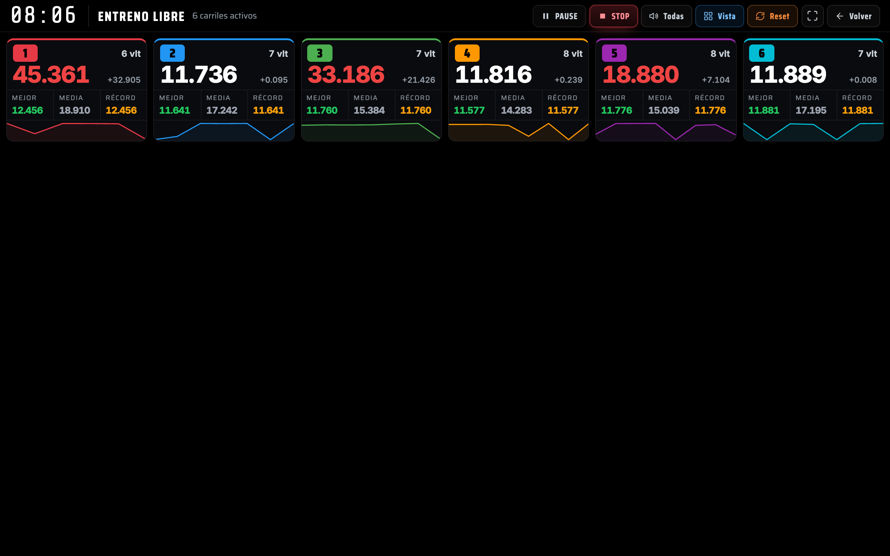
Préparer un entraînement de compétition. Le formulaire avance par étapes numérotées : circuit, participants et séquence de changement de voie. Pour ajouter des équipes, tape dans la recherche du catalogue (Entrée ajoute la première qui correspond). Chaque participant peut monter ou descendre d'une voie ; Tirer les voies au sort (« Sortear carriles ») les répartit au hasard et Tout vider (« Vaciar todo ») repart de zéro. Si deux participants portent le même nom, PitWall te prévient. Dans la séquence, Ordre naturel (« Orden natural ») la remet dans l'ordre 1, 2, 3… Une barre fixe en bas résume les voies, combien sont en piste et combien en réserve, à côté du bouton Préparer la séance (« Preparar sesión »).
Les entraînements de compétition sont enregistrés. À la chute du drapeau de chaque série, PitWall enregistre une ligne par voie ayant roulé, avec son participant, ses tours, son meilleur tour et sa moyenne. Les participants au repos et les voies sans passages ne laissent aucune ligne. Un arrêt forcé n'enregistre pas cette série : elle est écartée et refaite en entier.
Depuis l'écran de préparation de l'entraînement de compétition, le lien Voir les entraînements enregistrés (« Ver entrenos guardados ») ouvre la liste des séances (date, nb de séries, participants, tours et meilleur tour), la plus récente en haut. En appuyant sur une séance, tu vois son détail en deux blocs :
- Classement de la séance : gagne celui qui cumule le plus de tours sur toutes ses séries et, à égalité, celui qui a le meilleur tour. La moyenne est celle de tous ses tours, pondérée par série (une série de 40 tours pèse ce qu'elle doit face à une de 3).
- Série par série : le détail de chaque série, voie par voie.
Chaque séance peut être supprimée depuis son détail. Si tu arrêtes la séance avec STOP et qu'elle a enregistré au moins une série, PitWall t'amène directement à ses résultats.
Réglages
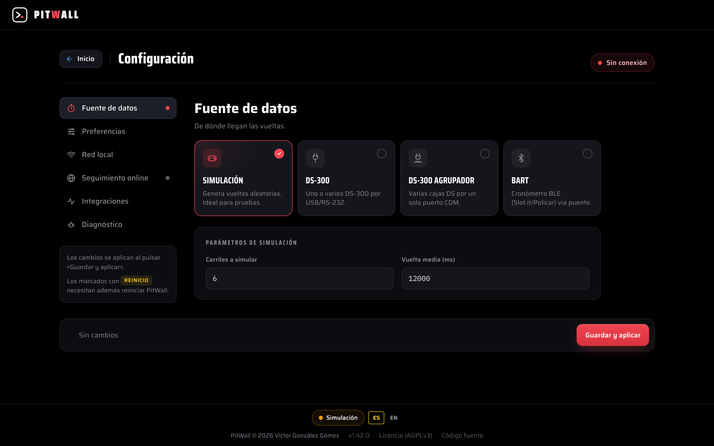
Les Réglages s'organisent avec un menu latéral : Source de données, Préférences, Réseau local, Sécurité, Suivi en ligne, Intégrations et Diagnostic. Chaque section a son propre écran, le menu affiche des points d'état (chrono, tunnel, mode debug) et, après l'enregistrement, tu reviens à la section où tu étais. En bas, une barre d'enregistrement fixe t'avertit des modifications non enregistrées et de celles qui demandent de redémarrer PitWall (seulement l'interface réseau et HTTPS ; le reste s'applique à l'enregistrement).
- Source de données : choisis d'où arrivent les passages — Simulation, DS-300 (un boîtier par port, avec son nombre de voies), DS-300 agrégateur (plusieurs boîtiers sur un seul port COM : indique le port, le baud —57600, 8N1— et le nombre de boîtiers 2/3/4 → 16/24/32 voies) ou BART par Bluetooth (il se connecte en BLE direct par défaut ; le TCP reste dans la liste pour l'émulateur ou un pont BLE→TCP). Avec l'agrégateur les voies sont numérotées à la suite (boîtier 1 → 1–8, boîtier 2 → 9–16…) et un seul signal de départ lance tous les boîtiers. Si tu utilises plusieurs Master BART (un par bloc de voies), ajoute une ligne par Master avec son nom BLE (p. ex.
BART_TRACK1,BART_TRACK2…) et son nombre de voies : ils sont numérotés à la suite comme les boîtiers de l'agrégateur DS-300, et chaque Master doit être appairé séparément. - Configuration du port, sans prise de tête : pour chaque circuit DS-300 (et l'agrégateur) tu ne vois d'un coup d'œil que le Port et le Baud rate. Choisis le port dans la liste détectée ; s'il n'y figure pas, « Saisir le chemin à la main » permet de le taper (p. ex.
COM3ou/dev/ttys003). Le baud rate est un menu déroulant avec les vitesses habituelles (9600–921600), avec « Saisir à la main » pour une valeur hors liste. Les réglages fins de la liaison série (Data bits, Parité, Stop bits, Contrôle de flux) sont repliés sous « Options avancées du port » : par défaut 8N1, on n'y touche presque jamais. - Préférences : le Mode de l'app (« Modo de la app » : basique ou avancé ; voir Introduction), l'Historique des tours en entraînement (les 10 derniers ou les 10 meilleurs ; voir Entraînement), l'Ordre du direct (par classement estimé ou par tours réels ; voir Diriger la course en direct) et les Couleurs de voie globales (« Colores de carril ») : celles utilisées quand il n’y a pas de scénario ou que le scénario n’a pas de couleurs propres. Clique sur chaque échantillon pour changer sa couleur ; Enregistrer les couleurs (« Guardar colores ») les applique tout de suite sans toucher à la connexion du chronométrage, et Couleurs d’usine (« Colores de fábrica ») rétablit la palette d’origine.
- Réseau local : interface réseau, restreindre l'accès web et HTTPS local (pour la caméra du QR).
- Sécurité (« Seguridad ») : un mot de passe pour que seuls ceux qui le connaissent entrent dans Système et Catalogue (voir Mot de passe d'accès plus bas).
- Suivi public par internet : publie les vues publiques sur internet pour suivre la course depuis l'extérieur du local (voir la section suivante).
- Intégrations (compatibilité Infolap, qui s'active et se désactive sur le moment) et Diagnostic (mode debug et outils pour enquêter sur un problème).
- La langue (ES/EN) se change depuis le pied de page.
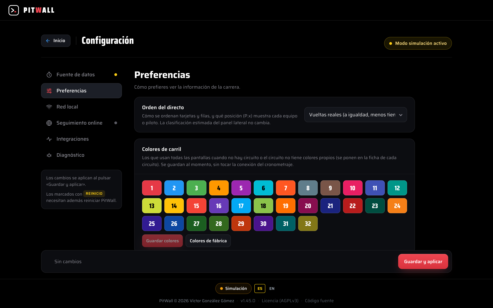
Mot de passe d'accès
Il sert à ce que ceux qui ne connaissent pas le programme ne touchent pas à ce qu'ils ne doivent pas toucher. Dans Réglages → Sécurité, active « Demander un mot de passe d'accès » (« Pedir contraseña de acceso »), tape le mot de passe deux fois (4 caractères minimum) et appuie sur Activer avec ce mot de passe (« Activar con esta contraseña »). Dès lors, le mot de passe protège uniquement les boutons de Système (Réglages, Base de données, Synchroniser le catalogue, Synchroniser la course, Connexion écosystème, Dépannage et le tunnel du suivi en ligne) et de Catalogue (Pilotes, Équipes, Voitures, Catégories et Scénarios), y compris sur l'ordinateur de PitWall lui-même et dans l'application de bureau. Le navigateur depuis lequel tu l'actives reste connecté jusqu'à ce que tu appuies sur Verrouiller (« Bloquear ») ou Se déconnecter, et la connexion du chronométrage n'est pas touchée.
- Tout le reste se fait sans mot de passe : l'accueil et toute la Compétition (courses et leur assistant, entraînements, direct, TV, corrections de tours, contrôle des pilotes et des pneus, résultats, statistiques en direct), ainsi que Lap (avec son PIN), l'application mobile, la liaison entre PitWall maître et esclave et l'import depuis PitWall Control (avec son PIN). N'importe qui peut donc diriger une course sans connaître le mot de passe. Dans l'assistant, seul + Nouveau circuit le demande, car il ouvre les Scénarios.
- Il se combine avec Restreindre l'accès web de Réseau local : il s'ajoute à cette restriction par IP.
- Après 5 tentatives ratées d'affilée, cet appareil doit attendre 30 s avant de réessayer. L'ordinateur de PitWall lui-même n'est jamais bloqué.
- Dans l'accueil, tant que tu n'es pas connecté, les boutons de Système et Catalogue portent un cadenas jaune et l'en-tête affiche Entrer (« Entrar »). Un bouton avec cadenas ouvre l'écran du mot de passe (avec ← Retour à l'accueil si tu ne le connais pas) et, une fois connecté, tu arrives directement sur cette page. Avec la session ouverte, l'en-tête affiche Verrouiller (« Bloquear »), qui ferme la session tout de suite (par exemple si tu laisses l'ordinateur sans surveillance).
- Le mot de passe reste actif même si tu redémarres PitWall (il est enregistré dans la base de données). Ce qui se perd au redémarrage, c'est la session : il faut donc se reconnecter. Se déconnecter (« Cerrar sesión ») est dans la même section.
- Changer le mot de passe en met un nouveau ; désactiver l'interrupteur efface le mot de passe.
- Tu l'as oublié ? Ferme complètement PitWall et lance-le en mode récupération, avec la variable d'environnement
PITWALL_DISABLE_PASSWORD=1: tant qu'elle est définie, aucun mot de passe n'est demandé. Va dans Réglages → Sécurité, mets-en un nouveau (ou désactive-le), puis ferme PitWall et rouvre-le normalement. Comment le lancer ainsi :- Mac (application installée), dans le Terminal :
PITWALL_DISABLE_PASSWORD=1 /Applications/PitWall.app/Contents/MacOS/PitWall - Windows, dans PowerShell :
$env:PITWALL_DISABLE_PASSWORD=1; & "$env:LOCALAPPDATA\Programs\PitWall\PitWall.exe"(chemin de l'installation normale, pour ton utilisateur seulement ; si tu l'as installé pour tous les utilisateurs, il se trouve en général dansC:\Program Files\PitWall\PitWall.exe) - Linux (AppImage), depuis le dossier où il se trouve :
PITWALL_DISABLE_PASSWORD=1 ./PitWall*.AppImage - Depuis le code (développement) :
PITWALL_DISABLE_PASSWORD=1 npm start
- Mac (application installée), dans le Terminal :
Base de données
Système → Base de données (/database) propose un menu avec Résumé (combien de courses, équipes, pilotes, circuits et tours il y a, et la taille du fichier), Exp. / Imp. course, Copie de sauvegarde et Restaurer une copie.
Exporter et importer une course
Pour ramener sur ton PC une course disputée dans un autre club sans déplacer toute la base de données. Exporter la course télécharge un fichier .pwrace avec tout : équipes, pilotes, séries, manches, tours, relais des pilotes, pneus, événements, vérifications avec photos, pole et catégories (une course de 24 h de 150 000 tours pèse environ 3 Mo). Importer une course l'ajoute comme nouvelle course, sur-le-champ et sans redémarrer, sans toucher à tes autres courses ; si son circuit n'existe pas sur ce PC, il est créé.
- On ne peut pas importer deux fois la même course : PitWall te prévient et te renvoie vers celle que tu as déjà.
- Une course avec une manche non clôturée ne s'exporte pas : clôture-la ou annule-la d'abord dans Dépannage → Manches bloquées.
- Une course qui était en cours arrive comme en attente, pour qu'elle ne prenne jamais le GO du DS-300 de ce PC.
- L'export et l'import attendent qu'aucune manche ne soit en cours, comme l'export Excel.
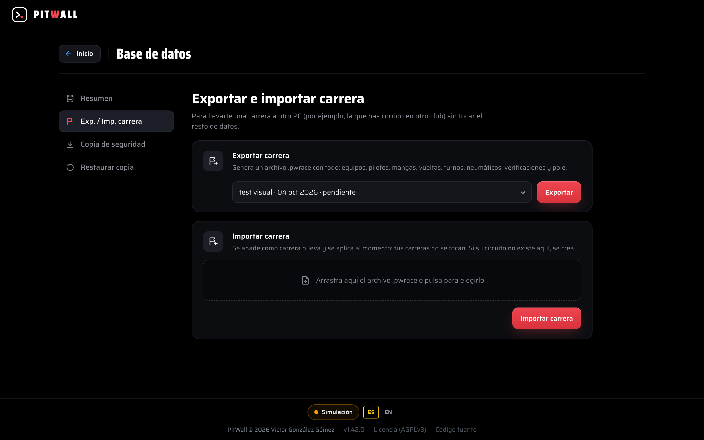
Sauvegarde de la base de données
Copie de sauvegarde et Restaurer une copie permettent de télécharger un instantané complet de tes données (.db) et, s'il faut un jour récupérer une installation ou déplacer PitWall sur un autre PC, d'importer une copie pour la restaurer : l'import est validé (ce doit être une vraie base SQLite) et reste « en attente » — rien n'est remplacé sur le moment, ça ne s'applique qu'en fermant PitWall complètement puis en le rouvrant, et tes données actuelles sont sauvegardées automatiquement avant application. Tu peux annuler un import en attente à tout moment avant de redémarrer.
Historique des versions
Dans le pied de toutes les pages, tu vois le numéro de version de PitWall. En cliquant dessus, l'Historique des versions (/changelog) s'ouvre, avec ce qui a été Ajouté, Amélioré et Corrigé à chaque mise à jour. La version augmente à chaque mise à jour, ainsi tu sais toujours quel PitWall tu as et ce qui a changé.
Suivi public par internet

Par défaut, les vues de PitWall (le direct, les Résultats et PitWall Lap) ne sont visibles que sur le réseau local. Avec le Suivi public par internet, chaque club peut les publier sur internet pour que pilotes et public suivent la course depuis l'extérieur du local, sans ouvrir de ports ni monter un VPN : PitWall crée un tunnel Cloudflare propre au club.
C'est dans Réglages → Suivi public par internet. Il y a deux modes :
- Rapide — PitWall génère une URL temporaire (*.trycloudflare.com) à la volée : sans compte ni domaine. C'est l'option pour un après-midi ponctuel ; note que l'URL change à chaque démarrage.
- Cloudflare propre — tu utilises le token du tunnel du club et ton propre domaine, ce qui rend l'URL fixe et à ton image. L'écran lui-même propose un guide pas à pas, avec des liens vers le panneau Zero Trust de Cloudflare et vers la documentation officielle, pour créer le tunnel et coller son token.
Contrôles. Boutons Démarrer / Arrêter avec l'état et l'URL en direct (pour la copier et la partager). Démarrer applique ce que tu as à l'écran à ce moment-là. Tu peux activer le démarrage automatique pour que le tunnel se lance seul à l'ouverture de PitWall.
Installer cloudflared. Le tunnel est lancé par l'outil cloudflared. S'il n'est pas installé, le bouton Installer cloudflared apparaît : il télécharge la version officielle dans le dossier de données de PitWall — sans demander de droits d'administrateur.
Glossaire (opération)
- Course : l'événement complet. Il se compose de séries.
- Série : groupe de participants avec sa rotation ; elle se compose de manches.
- Manche : une tirée chronométrée (toutes les voies en même temps) d'une durée donnée.
- Rotation : comment les participants changent de voie d'une manche à l'autre.
- Repos : manche dans laquelle un participant ne court pas (trou 0 dans la séquence).
- Passage : parcours complet de la séquence de voies ; N passages = N× manches.
- Répéter la voie : courir chaque voie N manches d'affilée, en cumulant les tours.
- GO : le signal de départ (du boîtier DS-300) qui lance la manche.
- Tour fantôme : tour marqué comme non valide (il ne compte pas), restaurable.
- Sortie (⚠️) : tour qui dure plus que le tour le plus rapide de ce pilote sur cette voie pendant la manche + 1,5 s (comme les « tours lents » de TicTac) ; s'il dure le double de sa moyenne propre ou plus, c'est un arrêt aux stands (🔧). En direct, c'est provisoire : quand le meilleur tour s'améliore, des tours précédents peuvent devenir des sorties.
- Pole : séance de qualification préalable (facultative) ; tous roulent sur la même voie et leur meilleur tour fixe la grille de départ.
- Événements : page (🗒️) avec le journal manche par manche de tout ce qui se passe dans la course —GO, pauses, fin de manche, tours fantômes, enregistrements de pilote…—, en direct.
- Entraînement libre : mode pour enregistrer des tours par voie sans équipes ni rotation (séance ouverte).
- PitWall Lap : vue mobile par équipe/pilote (ses tours annoncés et sa position).
- PIN : code par équipe pour entrer sur son panneau dans PitWall Lap.
- Pt (temps minimum) : seuil en dessous duquel un tour est considéré comme un passage fantôme et ne compte pas.
- Scénario : piste enregistrée (circuits, voies, séquence et temps minimum) réutilisable dans plusieurs courses.
- Catégorie : classe de voiture/pilote (GT, Tourisme, Classiques…) ; permet un Pt différent par catégorie.
- Catalogue : bibliothèque réutilisable de pilotes, équipes et voitures (importable par CSV).
- QR de pilote : code qui identifie le pilote pour enregistrer son relais lors du scan.
- Relais (shift) : période pendant laquelle un pilote est au volant au sein de son équipe en endurance.
- DS-300 : le boîtier de chronométrage qui détecte le passage sur la ligne d'arrivée.
- Importer une série : apporter une épreuve montée dans PitWall Control (par JSON ou par réseau LAN + PIN) pour que PitWall crée automatiquement la course.
- PitWall Control : l'app de gestion de championnats qui monte l'épreuve et reçoit les résultats de PitWall.
- Suivi public par internet : publier les vues publiques (direct, résultats, Lap) sur internet avec un tunnel Cloudflare propre au club.
- Tunnel Cloudflare : connexion qui expose sur internet les vues publiques de PitWall sans ouvrir de ports (mode Rapide avec URL temporaire, ou Cloudflare propre avec domaine fixe).
- Historique des versions : la page (/changelog) qu'ouvre le numéro de version du pied, avec ce qui a été ajouté, amélioré et corrigé à chaque mise à jour.